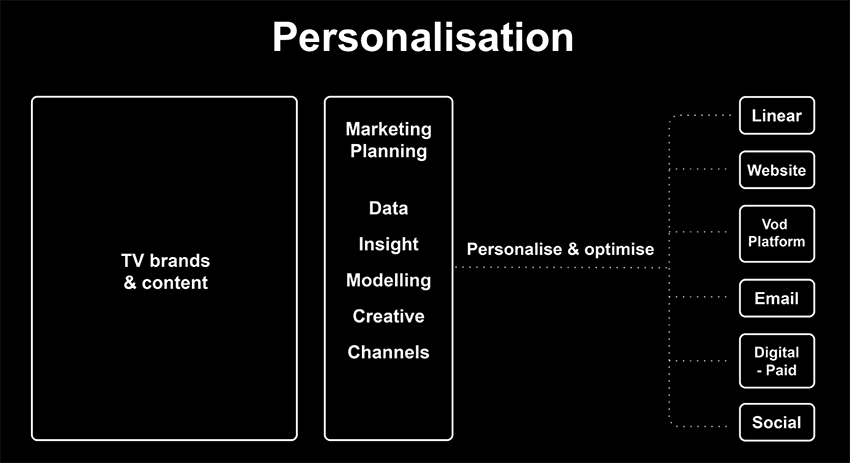

A diverse range of Digital, VOD and OTT projects to grow consumption of non-linear platforms. There are many challenges broadcasters often face when building a digital promotional strategy integrated within the goals of the business. These could include:
Our service benefits
Introducing Indicia
JWM and Indicia working in partnership, a technical solution and data analytics company - Bringing together broadcast marketing and content prioritisation expertise, with proven experience with big data analytics and insight, to effectively influence consumer behavior. A summary of the key services are:
(fig.1)
To read more about how digital disruption can be embraced within your organisation, please check out our recent opinion piece below, written by Jo Wilkinson:
Digital Disruption - A blessing not a Curse
For more information about Indicia please see website below:
Please get in touch if you'd like to find out more about a FREE digital strategy workshop for your organisation.

Training workshops equipping staff at all levels with the strategies and tools to realise the true potential of their on-air marketing. Providing support to broadcasters going through an internal re-organisation.
Follow us